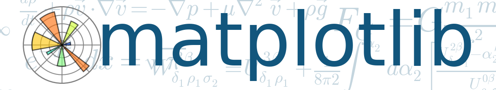

Matplotlib¶
Introducción¶
{kind=link}
Matplotlib es una biblioteca para la generación de gráficos a partir de datos contenidos en listas o arrays en el lenguaje de programación Python y su extensión matemática NumPy. Proporciona una API, pylab, diseñada para recordar a la de MATLAB.
En matplotlib todo está organizado en una jerarquía:
En la parte superior se encuentra el módulo
matplotlib.pyplot. En este nivel, se utilizan funciones simples para agregar elementos de trazado (líneas, imágenes, texto, etc.) a los ejes actuales en la figura actual.El siguiente nivel en la jerarquía es el primer nivel de la interfaz orientada a objetos, en la que pyplot se usa solo para algunas funciones, como la creación de figuras, y el usuario crea y realiza un seguimiento explícito de los objetos de figuras y ejes. En este nivel, el usuario usa pyplot para crear figuras, y a través de esas figuras, se pueden crear uno o más objetos de ejes.
Componentes de un gráfico¶

Figure¶
Es la visualización completa. Figure realiza un seguimiento de todos los Axes hijos y el Canvas. Una figura puede tener cualquier número de Axes, pero para ser útil debe tener al menos uno.
La forma más fácil de crear una nueva Figure es con pyplot:
fig = plt.figure() # an empty figure with no axes
fig, ax_lst = plt.subplots(2, 2) # a figure with a 2x2 grid of Axes
Axes¶
Esto es lo que se puede pensar como ‘un gráfico’, es la región de la imagen con el espacio de datos. Un Figure dada puede contener muchos Axes, pero un objeto Axe dado solo puede estar en un Figure. Axes contiene dos (o tres en el caso de 3D) objetos Axis que se ocupan de los límites de datos. Cada Axe tiene un título, una etiqueta para el eje horizonal y una etiqueta para el eje vertical.
La clase Axes y sus funciones son el punto de entrada principal para trabajar con la interfaz orientada a objetos.
Axis¶
Corresponden a los ejes, algo así como líneas rectas. Se encargan de establecer los límites del gráfico y generar los ticks (las marcas en el eje) y los ticklabels (strings que etiquetan los ticks).
Gráfico a Gráfico¶
A continuación, mostraremos un amplia gama de gráficos que pueden ser desplegados con Matplotlib. Lo primero será cargar las librerias para este módulo.
import numpy as np
import matplotlib.pyplot as plt
import matplotlib.cm as cm
from scipy.stats import multivariate_normal
from mpl_heatmap import heatmap, annotate_heatmap
%matplotlib inline
Gráfico de líneas¶
# grafico simple
# datos
x = np.linspace(0, 2, 100)
# grafico
# tamano del grafico
fig = plt.figure(figsize=(10, 5))
# graficar
plt.plot(
x, # eje x
x, # eje y
label='linea', # etiquetado
color="black", # color
linewidth=1 # tamano de la curva
)
plt.legend() # agregar etiquetado
plt.title("grafico simple") # agregar titulo
plt.xlabel('x') # nombre eje x
plt.ylabel('y') # nombre eje y
plt.grid() # agregar grillado
plt.show() # mostrar grafico
# grafico compuesto
# datos
x = np.linspace(0, 2, 100)
# grafico
# tamano del grafico
fig = plt.figure(figsize=(10, 5))
# graficar
# a) lineal
plt.plot(
x, # eje x
x, # eje y
label='linea', # etiquetado
color="black", # color
linewidth=1 # tamano de la curva
)
# b) cuadratica
plt.plot(
x, # eje x
x**2, # eje y
label='cuadratica', # etiquetado
color="b", # color
linewidth=1 # tamano de la curva
)
# c) cubica
plt.plot(
x, # eje x
x**3, # eje y
label='cubica', # etiquetado
color="r", # color
linewidth=1 # tamano de la curva
)
plt.legend() # agregar etiquetado
plt.title("grafico compuesto") # agregar titulo
plt.xlabel('x') # nombre eje x
plt.ylabel('y') # nombre eje y
plt.grid() # agregar grillado
plt.show() # mostrar grafico
¿Cuándo utilizar gráfico de líneas?
x: Debe ser datos del tipo ordinal o cuantitativo.
y: Debe ser datos de tipo ordinal, posicional o cuantitativo.
Gráfico de Barras¶
# datos
np.random.seed(0) # fijar semilla
people = ('Tom', 'Dick', 'Harry', 'Slim', 'Jim')
y_pos = np.arange(len(people))
performance = 3 + 10 * np.random.rand(len(people))
error = np.random.rand(len(people))
# grafico
fig = plt.figure(figsize=(10, 5))
plt.bar(
y_pos, # eje x
performance, # eje y
yerr=error, # # error mostrado en eje y
align='center', # centrar nombre eje x
color="blue", # color
alpha=0.6 # intensidad del color
)
plt.xticks(y_pos, people)
plt.xlabel('People')
plt.show()
Ahora para realizar el mismo gráfico pero con los ejes invertidos, se debe graficar con plt.barh
# datos
np.random.seed(0) # fijar semilla
people = ('Tom', 'Dick', 'Harry', 'Slim', 'Jim')
y_pos = np.arange(len(people))
performance = 3 + 10 * np.random.rand(len(people))
error = np.random.rand(len(people))
# grafico
fig = plt.figure(figsize=(10, 5))
plt.barh(
y_pos, # eje x
performance, # eje y
xerr=error, # error mostrado en eje x
align='center', # centrar nombre eje y
color="blue", # color
alpha=0.4 # intensidad del color
)
plt.yticks(y_pos, people)
plt.xlabel('People')
plt.show()
Ahora, si queremos poner ambos gráficos en una sola vista, debemos ejecutar la siguiente rutina:
# datos
np.random.seed(0) # fijar semilla
people = ('Tom', 'Dick', 'Harry', 'Slim', 'Jim')
y_pos = np.arange(len(people))
performance = 3 + 10 * np.random.rand(len(people))
error = np.random.rand(len(people))
# grafico
fig = plt.figure(figsize=(15, 5)) # ventana
# grafico lado izquierdo
plt.subplot(1, 2, 1) # sub-ventana
plt.barh(y_pos, performance, xerr=error, align='center', color="blue", alpha=0.4)
plt.yticks(y_pos, people)
plt.xlabel('Performance')
# grafico lado derecho
plt.subplot(1, 2, 2) # sub-ventana
plt.bar(y_pos, performance, yerr=error, align='center', color="blue", alpha=0.6)
plt.xticks(y_pos, people)
plt.xlabel('People')
plt.ylabel('Performance')
plt.show()
¿Cuándo utilizar gráfico de barras?
x: Debe ser datos del tipo nominal o ordinal.
y: Debe ser datos de tipo ordinal, posicional o cuantitativo.
Evitar: gráfico de nominal vs nominal.
Scatter Plot¶
# datos
np.random.seed(42)
x = np.arange(0.0, 50.0, 2.0)
y = x ** 1.3 + np.random.rand(*x.shape) * 30.0
s = np.random.rand(*x.shape) * 800 + 500
# grafico
fig = plt.figure(figsize=(10, 5)) # ventana
plt.scatter(
x, # eje x
y, # eje y
s, # tamano de los puntos
c="g", # color
alpha=0.7, # intensidad color
marker=r'$\clubsuit$', # forma de los puntos
label="Suerte" # etiquetdo fijando posicion
)
plt.xlabel("Duende")
plt.ylabel("Oro")
plt.legend(loc='upper left')
plt.show()
Ejercicio: Realizar un gráfico que cumpla las siguientes restricciones:
Valores de los ejes: \(x,y \in [0,1]\)
Gráfico de línea de una circunferencia de radio \(r_0\)
Los puntos que se encuentren dentro de la circunferencia tengan forma de círculos con color naranja y aquellos utnos que se encuentren fuera tengan forma de triángulos con color azul.
Los puntos graficados deben estar escalado por tamaño.
# datos
N = 100
r0 = 0.6 # radio inicial
x = 0.9 * np.random.rand(N) # puntos aleatorios eje x
y = 0.9 * np.random.rand(N) # puntos aleatorios eje y
r = np.sqrt(x ** 2 + y ** 2) # radio sacado de los puntos
area = np.pi * (10 * np.random.rand(N)) ** 2 # tamano
area1 = np.ma.masked_where(r < r0, area) # dentro del radio objetivo
area2 = np.ma.masked_where(r >= r0, area) # fuera del radio objetivo
# grafico
# a) circunferencia
plt.figure(figsize=(8, 8))
theta = np.arange(0, np.pi / 2, 0.01)
plt.plot(r0 * np.cos(theta), r0 * np.sin(theta), "k--", lw=1.0)
# b) figuras dentro de la circuenferencia
sc1 = plt.scatter(x, y, s=area2, marker='o', c = "orange", label="interior" )
# b) figuras fuera de la circuenferencia
sc2 = plt.scatter(x, y, s=area1, marker='^', c = "b", label="exterior")
plt.xlabel("x")
plt.ylabel("y")
plt.legend(loc='upper left')
plt.show()
¿Cuándo utilizar scatter plot?
x: Dato del tipo posicional o cuantitativo.
y: Dato del tipo posicional o cuantitativo.
z: Dato del tipo nominal u ordinal (opcional)
OBSERVACION: Si hay pocos puntos, también puede usarse para z datos de tipo posicional o cuantitativo.
Mapa de calor¶
# datos
vegetables = ["cucumber", "tomato", "lettuce", "asparagus",
"potato", "wheat", "barley"]
farmers = ["Farmer Joe", "Upland Bros.", "Smith Gardening",
"Agrifun", "Organiculture", "BioGoods Ltd.", "Cornylee Corp."]
harvest = np.array([[0.8, 2.4, 2.5, 3.9, 0.0, 4.0, 0.0],
[2.4, 0.0, 4.0, 1.0, 2.7, 0.0, 0.0],
[1.1, 2.4, 0.8, 4.3, 1.9, 4.4, 0.0],
[0.6, 0.0, 0.3, 0.0, 3.1, 0.0, 0.0],
[0.7, 1.7, 0.6, 2.6, 2.2, 6.2, 0.0],
[1.3, 1.2, 0.0, 0.0, 0.0, 3.2, 5.1],
[0.1, 2.0, 0.0, 1.4, 0.0, 1.9, 6.3]])
# graficos
fig, ax = plt.subplots(figsize=(10, 10))
im, cbar = heatmap(
harvest, # valores
vegetables, # filas
farmers, # columnas
ax=ax, # ventana
cmap="YlGn", # gama de colores
cbarlabel="harvest [t/year]" # nombre barra de colores
)
texts = annotate_heatmap(im, valfmt="{x:.1f} t")
fig.tight_layout()
plt.show()
Otros gráficos de interés¶
Gráfico de Barra de Error¶
# datos
x = np.arange(0.1, 4, 0.5)
y = np.exp(-x)
# graficos
fig, (ax1, ax2) = plt.subplots(ncols=2, figsize=(20, 10))
x_error = 0.1 + 0.2*np.random.rand(len(x))
ax1.errorbar(x, y, xerr=x_error)
y_error = 0.1 + 0.2*np.random.rand(len(x))
ax2.errorbar(x, y, yerr=y_error)
fig.show()
¿Cuándo utilizar gráfico de barra de error?
x: Dato del tipo posicional o cuantitativo.
y: Dato del tipo posicional o cuantitativo.
z: Dato del tipo posicional o cuantitativo. Los valores de z tienen que tener las mismas unidades y.
Countor Plot¶
# datos
x, y = np.mgrid[-3:3:.025, -2:2:.025]
pos = np.empty(x.shape + (2,))
pos[:, :, 0] = x
pos[:, :, 1] = y
z1 = multivariate_normal.pdf(
pos,
mean=[-1.0, -1.0],
cov=[[1.0, 0.0], [0.0, 0.1]]
)
z2 = multivariate_normal.pdf(
pos,
mean=[1.0, 1.0],
cov=[[1.5, 0.0], [0.0, 0.5]]
)
z = 10 * (z1 - z2)
# grafico
fig, axs = plt.subplots(ncols=2, figsize=(20, 10), sharex=True, sharey=True)
cmaps = [cm.rainbow, cm.autumn, cm.coolwarm, cm.gray]
countour_styles = [
{"colors": "k", "linestyles": "solid"},
{"colors": "k", "linestyles": "dashed"},
]
for i, ax in zip(range(len(cmaps)), axs.ravel()):
cs = ax.contour(x, y, z, 11, **countour_styles[i])
if i > 0:
ax.clabel(cs, fontsize=9, inline=1)
ax.grid(alpha=0.5)
fig.show()
¿Cuándo se debe utiliar countour plot?
x: Dato del tipo posicional o cuantitativo.
y: Dato de tipo posicional o cuantitativo.
z: Dato de tipo posicional o cuantitativo.
OBSERVACION: Se debe tener suficiente densidad/regularidad de puntos como para poder obtener superficies de nivel.
Campos de Vectores¶
¿Porqué se llama quiver al campo de vectores en inglés?
def my_vector_field():
"""
You can even define a new function.
"""
X, Y = np.meshgrid(np.arange(0, 2 * np.pi, .2), np.arange(0, 2 * np.pi, .2))
U = np.cos(X)
V = np.sin(Y)
fig, (ax1, ax2) = plt.subplots(ncols=2, figsize=(20, 10))
Q1 = ax1.quiver(U, V)
qk1 = ax1.quiverkey(
Q1,
0.5,
0.92,
2,
r'$2 \frac{m}{s}$',
labelpos='W',
fontproperties={'weight': 'bold'}
)
Q2 = ax2.quiver(
X[::3, ::3],
Y[::3, ::3],
U[::3, ::3],
V[::3, ::3],
pivot='mid',
color='r',
units='inches'
)
qk2 = ax2.quiverkey(
Q2,
0.5,
0.03,
1,
r'$1 \frac{m}{s}$',
fontproperties={'weight': 'bold'}
)
ax2.plot(X[::3, ::3], Y[::3, ::3], 'k.')
ax2.set_title("pivot='mid'; every third arrow; units='inches'")
fig.show()
my_vector_field()
¿Cuándo utilizar campos de vectores?
x: Debe ser datos del tipo posicional o cuantitativo.
y: Debe ser datos de tipo posicional o cuantitativo.
z: Pendiente debe ser dato de tipo posicional o cuantitativo.
Evitar: gráfico de campo de vectores si no es posible la interpretación correspondiente.